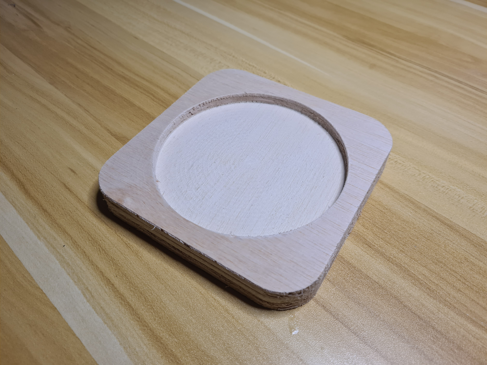
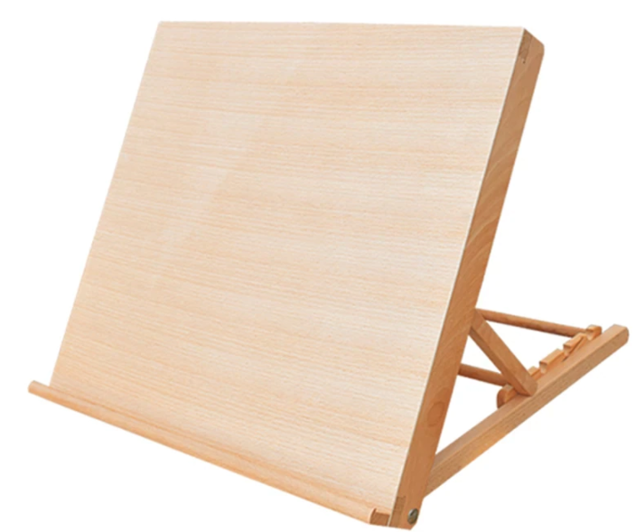
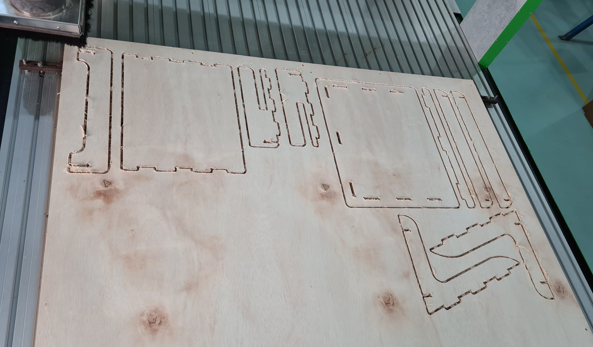
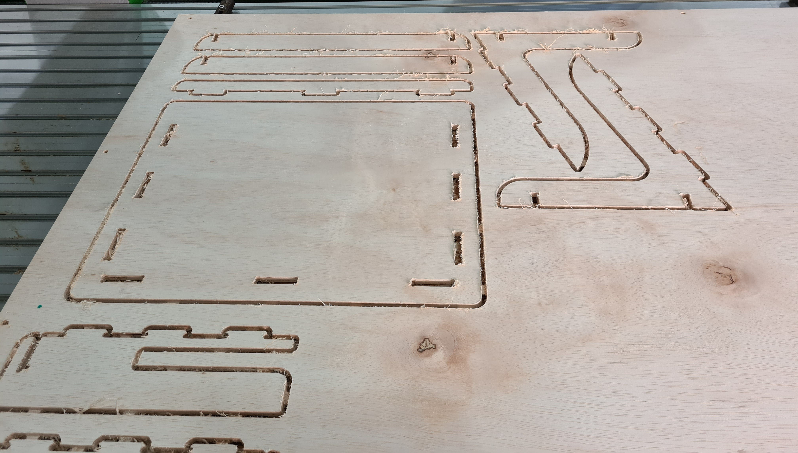
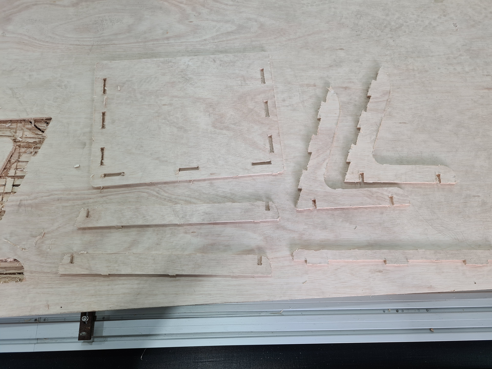
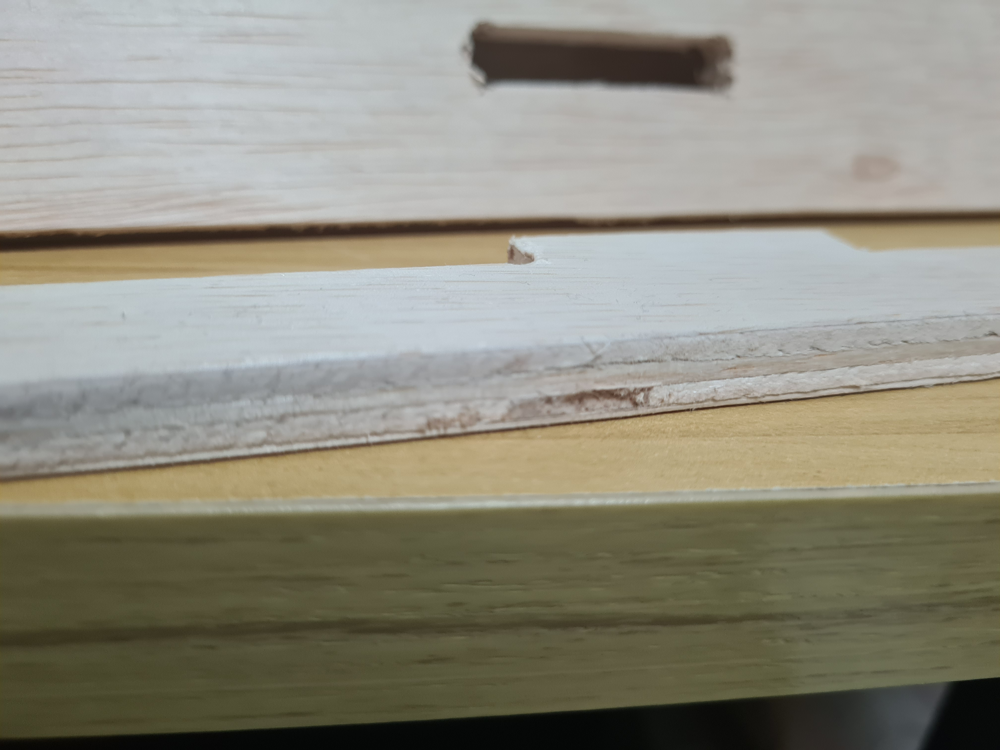
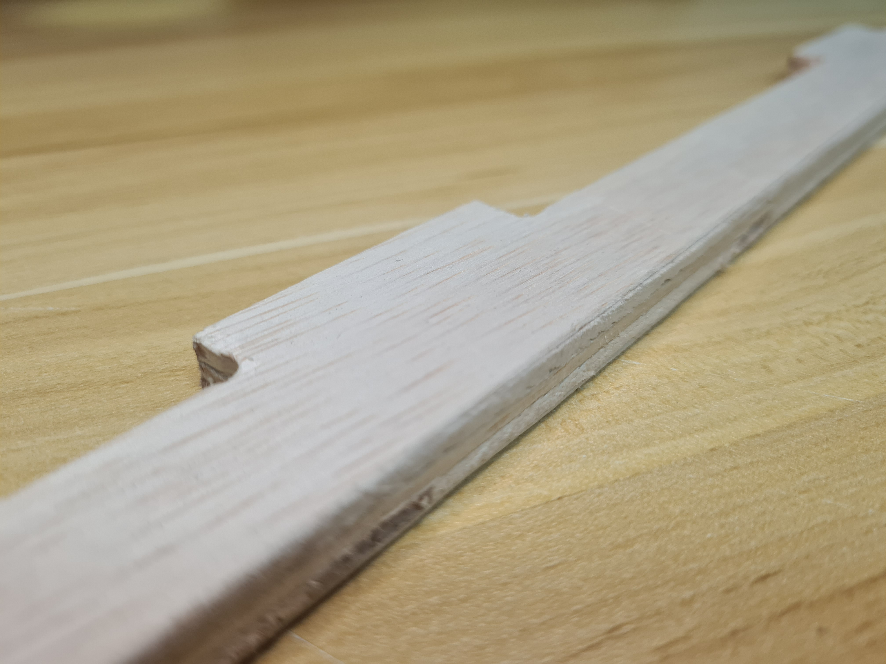
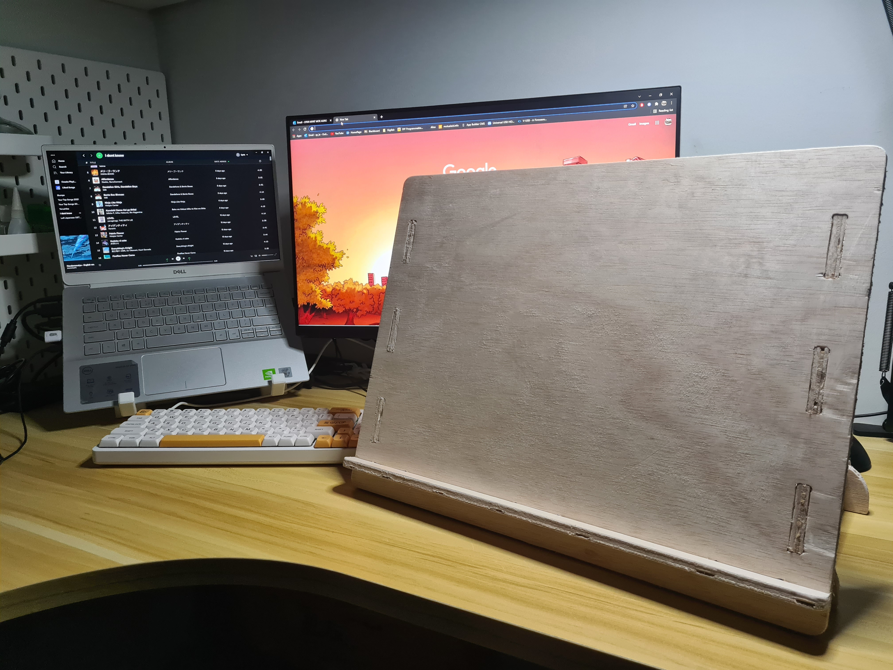

2D Computer Controlled Machining
Proficiency Test
Before I get started on my assignment, I had to do a proficiency test, using a premade DXF file of a coaster. This allowed us to get used to the program, (Vcarve Pro) and the machine (Versatil CNC 2D Router) used. From this, I learnt the different settings of the program, and how to generate gcode for profile and pocket cutting. As for the machine itself, I learnt the importance of screwing down the workpiece, as well as the movement system of the machine. After half an hour of setting up and cutting, this was what I ended up with.
The assignment
For the assignment, I was tasked to make a "human-sized" furniture using only the CNC machine. After much deliberation, I decided to make a tabletop easel just like this one, but non adjustable. I am not an artist, but I thought it would be cool to have
I first modelled the easel in Fusion360 using parametric thickness. As I did not know what thickness wood was available, I set it to 18mm as that was what was used during the proficiency test. As I did not want it too big, I made the easel big enough to just fit an A3 drawing block or my drawing tablet. I made sure to keep in mind the "flat pack" nature of this assignment and made all the bodies using only extrudes. After modelling, this was what I came up with. File available here.
2D CNCing
After I got the model, I went down to the large format cnc cutter and prepared to cut my assignment. The wood they gave me that day was 9mm, so before exporting the DXF files, I made the necessary changes to my model. In Vcarve Pro, I set the size and thickness of the stock, then arranged the pieces to have as little waste material as possible. I was doing this assignment together with Zi Hon, so we worked together to save material. It was in Vcarve where I added dogbones to my model, as I had not done so during modelling. Because this was my first time cutting a large piece, I added a lot of tabs as I just wanted to be sure that the pieces would not break off before it was done. After all the setup, this was what the simulation showed.

After that, I homed the machine using reference move, set the Z height using the probe and set the X-Y 0 coordinates. Once the machine was up and running, I had my hand over the emergency button just in case, luckily I did not need to stop it. I thought it was going to take longer to cut, but as it was 9mm wood, it was done in 2 passes so all the pieces ended up only taking roughly 10-15 mins to cut. After cutting, I took a chisel to the tabs to get my pieces out. Here are some pictures during the cutting process.
Zi Hon (left) and I (right) trying to maximise space
 After chiseling
Earlier I added many tabs as I did not want to risk anything, however this proved to be overkill and unecessary. All it did was take longer for me to cut out the pieces from the stock. Moreover, due to my carelessness or lack of experience, when chiseling instead of the tabs being cut, it was more like they were being crushed and torn out. As a result, it left some voides where the tab used to be.
Nevertheless, it was done cutting, and I brought it home to sand down the fuzzy edges with 180 grit sandpaper.
After an hour so of sanding, I put the easel together. Luckily, even though I did not model in tolerences, the easel came together quite well, all the joints seem just tight enough without needing extra sanding. With that, my easel is done.
What I learnt fromn this assignment is that I put too many tabs to be practical, and that I need to be more careful with chiseling if I want to have a nicer outer finish. Other than that, I think this went well. I would use this for drawing, but no time so for now its relegated to holding up my drawing tablet on my shelf.